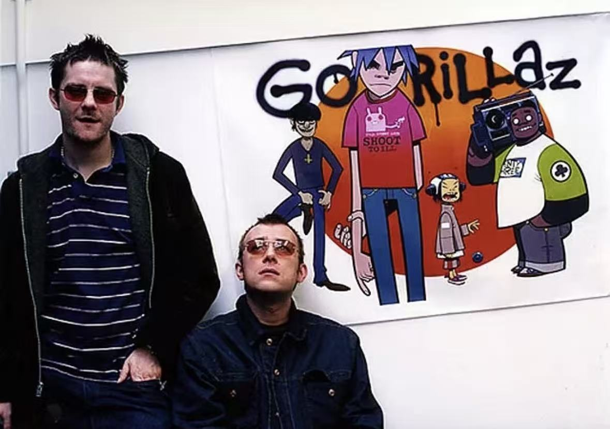
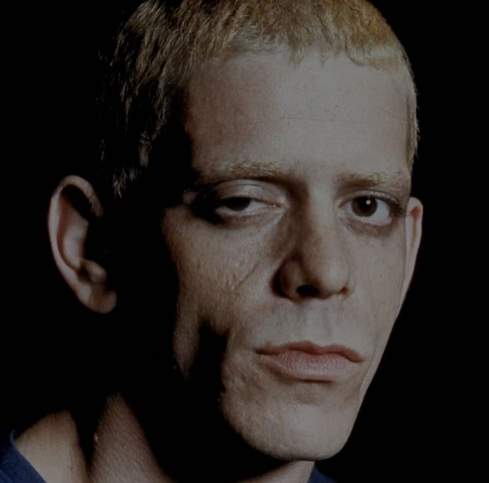
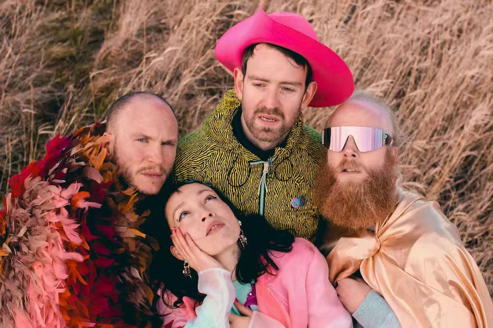

“在这里，自然并没有死亡，它只是学会了吞噬塑料。”
欢迎来到一座由人类文明遗弃的消费品残骸与塑料垃圾拼凑而成的怪诞离岸工程。
Damon Albarn（音乐核心）与 Jamie Hewlett（视觉设定）抹去了真实的“自我”，用虚拟乐队 Gorillaz 作为纯粹的艺术容器。
《Plastic Beach》脱胎于名为 Carousel 的项目。Jamie 赋予了角色真实的创伤与老去，而 Damon 则注入了对生态崩溃的悲悯。

Go forth, blossom in your soul
前进，在你的灵魂中盛放
When you know your heart is light
当你领悟到你的心如明灯
Electric is the love
那么爱便是电流
Just looking out on the day of another dream
寻找我们梦想着的未来吧
Where you can't get what you want, but you can get me
如果你不能拥有你想要的一切，但你还有我啊
So let's set out to sea
让我们向广袤的海洋出发
Oh, joys arise, the sun has come again to hold you
快乐起来，太阳会像往常一样将你抱住
Sailing out the doldrums of the week
从一周的郁闷中航行而出
The polyphonic prayer is here, it's all around you
复调的希望就在这里，围绕着你
松弛慵懒的黑帮船长，用最惬意的语调，为你揭开病态世界的幕布。

极其粗粝厌世的机械化念白，演绎“机械本性”与“人类灵魂”的残酷拉扯。

声音如同海妖，在充满工业废渣的赛博空间提供虚幻而美丽的救赎。
呈现了一个极其现实的废土画卷——海洋中真实的垃圾带正成为新物种的温床。
当自然被水钻和塑料包裹（Rhinestone Eyes），我们在不断诘问：什么是真，什么是假？
拥有全世界的带宽，却依然找不到真实的触碰。我们在超载中忍受孤独。